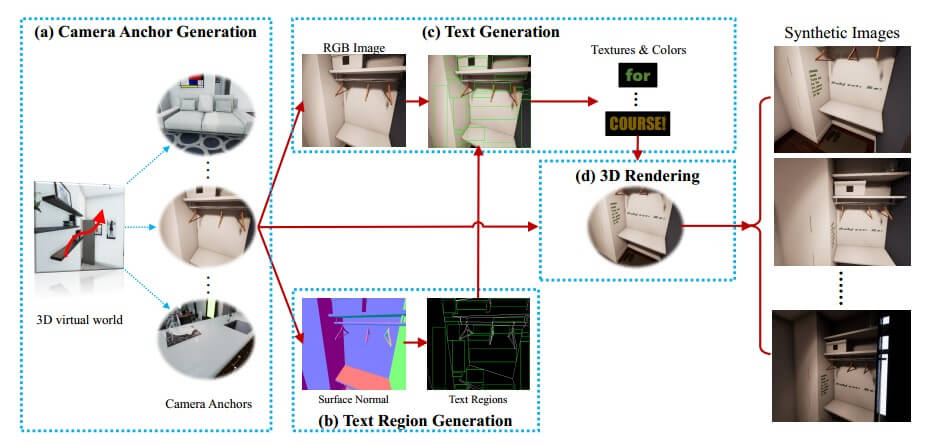
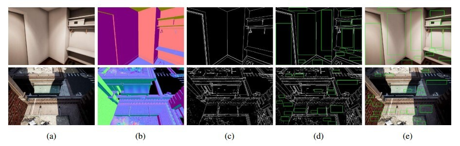
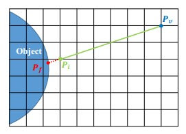
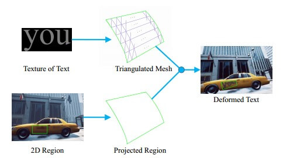
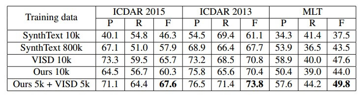
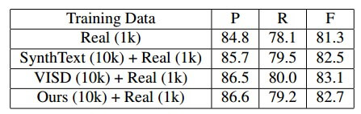
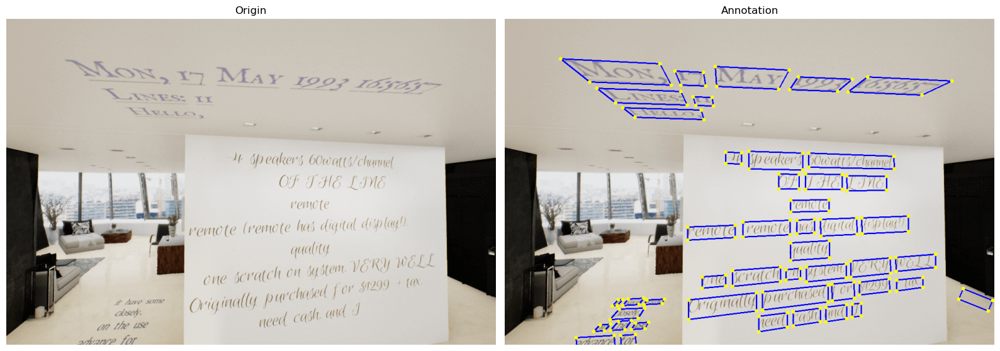
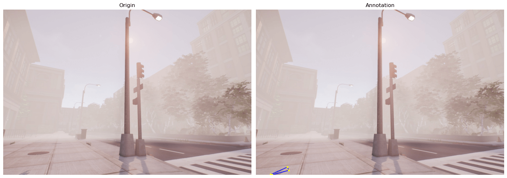

资源
全文
Abstract
一种用 3D 图形学引擎合成场景文本的方法。
1. Introduction
2.1. Synthetic Data for Scene Text
介绍一下前人工作：
Synth90K 只有裁剪的局部区域，不能直接用于 Text Detection
大名鼎鼎的 SynthText……
这些方法都不是从 3D 虚拟世界里渲染的。
2.2. Image Synthesis in 3D Virtual Worlds
领域有：
3D 模型的使用：
在静态背景真实图像上渲染 3D 对象。
随机排列充满物体的场景。
使用商业游戏引擎：
2.3. Scene Text Detection
介绍一下 STD。
自上而下的方法。
在通用对象检测的框架上将场景文本视为通用对象。
3. Methodology
3.1. Overview
基于 UE4 和 UnrealCV 插件。
9 个 3D 场景模型：

The pipeline of SynthText3D.
摄像头锚点生成模块
文本区域生成模块
文字生成模块
3D 渲染模块
步骤：
为每个 3D 模型手动初始化少量相机锚点。
从 3D 引擎获得每个相机锚点的 RGB 图像和精确的表面法线图
将基于曲面法线贴图生成可用的文本区域
从所有可用的文本区域中随机选择几个区域，并根据文本区域的大小生成随机字体、文本内容和写作结构的文本（所选择的文本区域的文本颜色是根据相应区域的背景 RGB 图像生成的）
将 2D 文本区域映射到 3D 虚拟世界中，并将相应的文本放置在其中
3.2. Camera Anchor Generation
手动检查，或者使用带注释的数据集来丢弃包含文本的背景图像。
在虚拟场景中构建了一小组相机视点（每个 3D 模型大约 20 到 30 个），这些视点被视为初始锚点。在收集过程中，操作员控制摄影机在场景中导航，选择适合放置文本的视图。
按照一个简单的规则选择相机锚点：视图中至少存在一个合适的区域。人工引导的摄像机锚点生成可以消除不合理的锚点，例如物体内部或昏暗光线下的锚点。
3.3. Text Region Generation
给定相机锚点，我们可以获得 3D 场景的可见部分，其中包含视图的RGB 图像 、深度图像 和曲面法线图 。
这里，文本区域的生成是基于曲面法线贴图的。三维虚拟世界中坐标点的表面法线被定义为垂直于当前坐标点处该表面的切平面的单位向量。
3.3.1 Normal Boundary Map
前人的工作有用 gpb-UCM 分割来获得合适的文本区域，也有用模型估计的显著性图和基本语义事实图来提取合适的文本嵌入位置。
但是我们用 3D 引擎，可以直接获得精确的深度图和法线图。
使用简单的变换方程从曲面法线贴图生成法线边界图 ：
\begin{align}
B_{i,j} =
\begin{cases}
1, & \max(|N_{i,j}-N^0_{i,j}|,...,|N_{i,j}-N^k_{i,j}|) > t, \\
0, & \text{otherwise}.
\end{cases}
\end{align}
t t t L 1 L_1 L 1
N i , j N_{i,j} N i , j B B B ( i , j ) (i,j) ( i , j )
{ N i , j 0 , . . . , N i , j k } \{N^0_{i,j},...,N^k_{i,j}\} { N i , j 0 , . . . , N i , j k }
∣ . ∣ |.| ∣ . ∣ L 1 L_1 L 1

文本区域生成说明：
3.3.2 Stochastic Binary Search
随机二进制搜索
为了彻底提取所有可用的文本区域，我们在图像上设置了一个初始候选区域网格，灵感来自基于锚的对象检测器。
在每个初始位置，我们从一个初始矩形边界框开始，该边界框的最小大小足以放置文本，设置为 32×64 像素。初始矩形框的步幅是从（12；24；36）中随机选择的。为了检索最大面积，我们提出了一种随机二进制搜索方法。
在每个搜索步骤中，我们随机展开矩形的一侧。展开遵循二进制搜索的规则：
下限被设置为当前边缘位置，上限被设置为图像的相应边缘。如果展开的矩形没有越过法线边界，则下限更新为中点；
否则，将上限更新到中点。当每条边的上界和下界相等时，该算法收敛。
在所有锚处生成框后，我们以随机顺序逐一检查每个框，如果任何框与任何其他框重叠，则将其丢弃。
3.4. Text Generation
生成文本区域后，我们随机抽取几个可用的文本区域进行文本渲染。给定一个文本区域及其 RBG 图像，文本生成模块旨在对具有特定外观的文本内容进行采样，包括字体和文本颜色。为了公平地与 SynthText 进行比较，我们使用了与相关论文相同的文本源，后者来自 Newsgroup 20 数据集。
文本内容是从具有三种结构的文本源中随机抽取的，包括单词、行（最多 3 行）和段落。
我们从 Google Fonts3 中随机抽取字体样本，用于生成文本的纹理。文本颜色由文本区域的背景决定，使用 SynthText 中相同的调色板 模型。每个区域的纹理和颜色将被输入到 3D 渲染模块中，以执行 3D 渲染。
3.5 3D Rendering
三维渲染三维渲染包括两个子模块。
第一个是 Text Placing Module，旨在将文本放置到三维虚拟世界中。
第二个是 Rendering module，其中可以执行照明和可见性调整、视点变换、遮挡。
3.5.1 Text Placing
看样子它是根据 2D 的法线图，用 3D 的方式把文字打在图上的。
2D-to-3D Region Projection
使用从粗到细的策略将 2D 文本区域投影到 3D 虚拟世界中。
假设 p j = ( x i , y j ) p_j=(x_i,y_j) p j = ( x i , y j ) d j d_j d j p j p_j p j P = ( X j , Y j , Z j ) P=(X_j,Y_j,Z_j) P = ( X j , Y j , Z j )
[ X j Y j Z j ] = K × d j × [ x j y j 1 ] \begin{bmatrix} X_j \\ Y_j \\ Z_j \end{bmatrix} = K \times d_j \times \begin{bmatrix} x_j \\ y_j \\ 1 \end{bmatrix}
⎣ ⎡ X j Y j Z j ⎦ ⎤ = K × d j × ⎣ ⎡ x j y j 1 ⎦ ⎤
其中 K K K

由整数深度和浮点深度计算的坐标。Pv ：视点的坐标点；Pi ：整数深度的坐标点；Pf ：浮点深度的坐标点。
为了获得细粒度的坐标，我们采用了光线投射，这是一个确定光线是否与物体相交以及在哪里相交的过程。如上图所示，我们初始化光线 V=(P_i−P_v)，其中 P i P_i P i P f P_f P f P v P_v P v
最后通过迭代 3D 四边形来使得最后的边界框变成 3D 轴对齐的边界框。
Text Deformation
在自然情况下，并不是所有的文本区域都是平面，例如瓶子和衣服的表面，文本需要变形以适应目标表面。
变形算法如下所示。我们将文本平面视为三角网格，将文本视为网格的纹理贴图。首先将网格的四个角顶点固定到区域角，然后将中间顶点变换到目标对象表面上最近的位置。最后，根据相对于角顶点的欧几里得距离来估计顶点的纹理坐标。

3.5.2 Rendering
我们分别为每个场景建立了几个环境设置。对于每个室内场景，我们构建三种照明：正常照度、亮度和黑暗度。
除了照明之外，我们还为室外场景添加了雾环境。
渲染过程：Demonstration for Paper – SynthText3D: Synthesizing Scene Text Images from 3D Virtual Worlds - YouTube
4. Experiments
合成图像的硬件要求：
i7-8700 CPU
Nvidia GeForce GTX 1060 GPU
16G RAM
2 秒一张，大小为 720 * 1080
4.1. Datasets
用于评估和对比实验的数据集：
SynthText：800K 张，随机抽了 10K，就叫它 SynthText-10k。
VISD（10K）
ICDAR 2013（229+233）
ICDAR 2015（1000+500）
MLT（ICDAR2017，7200+1800+9000）
4.2. Visual Analysis
视觉分析 两个关键因素影响合成数据的视觉效果。一个是合适的文本区域。另一个是渲染效果。
4.2.1 Suitable Text Regions
搁这吹自己 Text Regions 位置放的好呢。
4.2.2 Rendering Effect
搁这吹自己图像渲染得真实呢。
4.3. Scene Text Detection
使用 EAST，ResNet-50 作为 backbone，4 个 GPU，batch size 为 56。
4.3.1 Pure Synthetic Data

比 SynthText 10K 好使！甚至我们 10K 的数据量比 800K 的 SynthText 都牛逼！
VISD 没有公开源码，只有数据集，我们的效果不如它，但是还是要嘴硬一句我们生成的图像在透视变换、各种照明和遮挡方面具有更逼真的外观。
混合数据（我们的 5K+VISD 5K）进行训练来进行实验，效果最棒棒喔！
4.3.2 Combination of Synthetic Data & Real Data

将合成数据集和真实数据集放一起 Train，效果还是比 VISD 低，真是气死宝宝了！
继续嘴硬。VISD 使用 10K 真实世界背景图像，提供丰富的对象和纹理。然而，我们的合成图像是由基于大约 200 个相机锚点的 3D 虚拟世界投影的。这可能是我们的改进略低于 VISD 的原因。
4.4. Limitations
我们的方法的主要局限性是我们需要手动选择相机锚，尽管这相对容易实现，因为每个虚拟世界只有大约 20-30 个相机锚。然而，考虑到以前的方法也需要手动检查或注释来过滤包含文本的背景图像，我们的手动选择是可以接受的。我们将在未来的工作中尝试通过引入一种自动生成相机锚的算法来改进它。
应该就是下一个论文了。
5. Conclusion
总结一下完事。
代码
数据集可视化
1 2 3 4 5 6 7 8 9 10 11 12 13 14 15 16 17 18 19 20 21 22 23 24 25 26 27 28 29 30 31 32 33 34 35 36 37 38 39 40 41 42 43 44 45 46 47 48 49 50 51 import numpy as npimport cv2import osimport matplotlib.pyplot as plt27 r'E:\dataset\Synth3D-10K\img\\' r'E:\dataset\Synth3D-10K\label\\' str (index) + '.jpg' )str (index) + '.txt' )with open (label_path, "r" ) as file:"\n" ) for line in lines:if len (line) > 1 :"," ) float (s) for s in values])2 ][i:i+4 ] for i in range (0 , len (result[::2 ]), 4 )]1 ::2 ][i:i+4 ] for i in range (0 , len (result[1 ::2 ]), 4 )]for i in range (len (x_list)):True , color=(255 , 0 , 0 ), thickness=2 )for p in points:0 ], p[1 ]), int (min (height, width) / 150 ), (0 , 255 , 255 ), -1 )1 , ncols=2 , figsize=(16 , 9 ))0 ].imshow(cv2.cvtColor(image_origin, cv2.COLOR_BGR2RGB))0 ].axis('off' )0 ].set_title('Origin' )1 ].imshow(cv2.cvtColor(image, cv2.COLOR_BGR2RGB))1 ].axis('off' )1 ].set_title('Annotation' )

但是通过人工审查，有些图像的质量实在不敢恭维，这真的好使吗？

转换成 TotalText 形式
1 2 3 4 5 6 7 8 9 10 11 12 13 14 15 16 17 18 19 20 21 22 23 24 25 26 27 28 29 30 31 32 33 34 35 36 37 38 39 40 import numpy as npimport osfrom tqdm import tqdmr'E:\dataset\Synth3D-10K\label' r"E:\dataset\Synth3D-10K\Txts" for index in tqdm(range (1 , 10000 + 1 )):str (index) + '.txt' )with open (label_path, "r" ) as file:"\n" ) for line in lines:if len (line) > 1 :"," ) float (s) for s in values])2 ][i:i+4 ] for i in range (0 , len (result[::2 ]), 4 )]1 ::2 ][i:i+4 ] for i in range (0 , len (result[1 ::2 ]), 4 )]"" for i in range (len (x_list)):'x: [[' ' ' .join(map (str , x))']], y: [[' ' ' .join(map (str , y))"]], ornt: [u'h" "'], transcriptions: [u'" "#" "']\n" with open (os.path.join(save_dir, "poly_gt_img" + str (index) + ".txt" ), 'w' , encoding='UTF-8' ) as file:
1 2 3 4 5 6 7 import osfrom tqdm import tqdmr"E:\dataset\Synth3D-10K\Images\\" for file in tqdm(os.listdir(file_dir)):"img" + file))
保存可视化结果（TotalText 形式）
1 2 3 4 5 6 7 8 9 10 11 12 13 14 15 16 17 18 19 20 21 22 23 24 25 26 27 28 29 30 31 32 33 34 35 36 37 38 import numpy as npimport cv2import osimport matplotlib.pyplot as pltfrom shapely.geometry import Polygonfrom tqdm import tqdmr'D:\mindOCR_dataset\SynthText3D\Images\Train\\' r'D:\mindOCR_dataset\SynthText3D\Txts\Train\\' r'D:\mindOCR_dataset\SynthText3D\Images\Train3\\' for index in tqdm(range (1 , 10001 )):'img' + str (index) + '.jpg' )'poly_gt_img' + str (index) + '.txt' )try :open (label_path, 'r' )continue for annotation in annotations:int (num) for num in annotation[annotation.find("x: [[" ) + 5 : annotation.find("]], y: [[" )].split()]int (num) for num in annotation[annotation.find("y: [[" ) + 5 : annotation.find("]], ornt: [" )].split()]"ornt: [u'" ) + 9 : annotation.find("'], transcriptions: [" )]True , color=(255 , 0 , 0 ), thickness=2 )for p in points:0 ], p[1 ]), int (min (height, width) / 150 ), (0 , 255 , 255 ), -1 )str (index) + '.jpg' ), image)
清洗数据
果然里面错误的数据太多，放到 mindOCR 里直接跑不动，让我怀疑这篇论文是不是有点问题，还得洗一洗：
去除注释中：
的数据，勉强能跑。
还有些数据错的更复杂，算了能跑就行吧。
1 2 3 4 5 6 7 8 9 10 11 12 13 14 15 16 17 18 19 20 21 22 23 24 25 26 27 28 29 30 31 32 33 34 35 36 37 38 39 40 41 42 43 44 45 46 47 48 49 50 51 52 53 54 55 56 57 58 59 60 61 62 63 64 65 66 67 68 69 70 71 72 73 74 75 76 77 78 79 80 81 82 83 84 85 86 87 88 89 90 91 92 93 94 95 96 import numpy as npimport cv2import osimport matplotlib.pyplot as pltfrom shapely.geometry import Polygonfrom tqdm import tqdmdef check_intersection (rectangle, rectangle_list ):for other_rectangle in rectangle_list:if rectangle != other_rectangle:if polygon.intersects(other_polygon):return True return False r'F:\dataset\Synth3D-10K\img\\' r'F:\dataset\Synth3D-10K\label\\' r'D:\mindOCR_dataset\SynthText3D\Txts\Train\\' for index in range (1 , 10000 + 1 ):str (index) + '.jpg' )str (index) + '.txt' )with open (label_path, "r" ) as file:"\n" ) for line in lines:if len (line) > 1 :"," ) float (s) for s in values])2 ][i:i+4 ] for i in range (0 , len (result[::2 ]), 4 )]1 ::2 ][i:i+4 ] for i in range (0 , len (result[1 ::2 ]), 4 )]False for i in range (len (x_list)):if not is_error: "" for i in range (len (x_list)):list (map (int , x_list[i]))list (map (int , y_list[i]))if polygon.area < 200 :True print (index, "四边形太小" , polygon.area)continue if not (polygon.is_valid and len (polygon.exterior.coords) == 5 ):True print (index, "不构成四边形" )continue if min (y) < 0 or min (x) < 0 or max (x) > width or max (y) > height:True print (index, "越界" )continue if check_intersection(polygon, points_list):True print (index, "相交" , polygon.area)continue 'x: [[' ' ' .join(map (str , x))']], y: [[' ' ' .join(map (str , y))"]], ornt: [u'h" "'], transcriptions: [u'" "A" "']\n" if len (string) > 0 :print ("写入" , index)with open (os.path.join(save_dir, "poly_gt_img" + str (index) + ".txt" ), 'w' , encoding='UTF-8' ) as file: